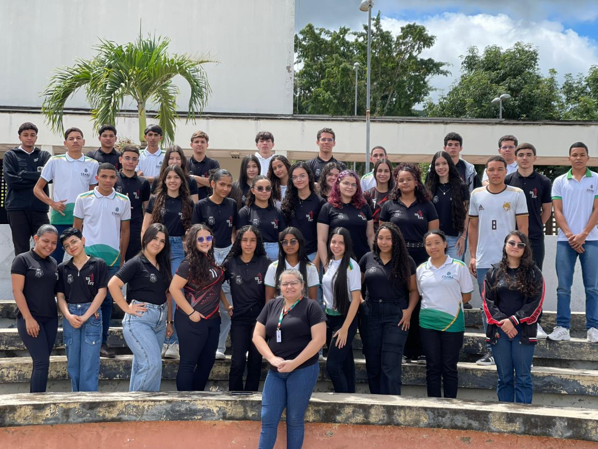

Sobre o VocaçãoPlus
O VocaçãoPlus é uma plataforma inteligente projetada para orientar estudantes na escolha de suas carreiras. Através do cruzamento de interesses pessoais e habilidades, auxiliamos na identificação do curso ideal com precisão, embasamento de dados e foco no desenvolvimento profissional.
Fazer teste vocacional
Uma plataforma inteligente que guia você em sua jornada para o futuro. Nosso algoritmo processa suas respostas e perfis comportamentais para sugerir as melhores áreas de atuação.
Análise com IA
Algoritmo que processa suas respostas.
Dados Completos
Grades e cargas horárias reais.
Escolha Clara
Tradução de informações técnicas.
Nossa base de dados abrange as principais áreas do conhecimento, guiando os estudantes pelos melhores caminhos acadêmicos. De carreiras tecnológicas em alta, como Informática e Engenharia de Software, até opções tradicionais nas áreas de Saúde e Humanas. Trazemos o perfil completo de cada curso para que você entenda exatamente o que o mercado e a faculdade exigem.
Clareza na Decisão
Trabalhamos para dar confiança na sua escolha, simplificando as informações complexas das ementas universitárias.
De Estudantes para Estudantes
Sabemos exatamente qual é o peso e a ansiedade de estar no terceiro ano do ensino médio e técnico precisando decidir o futuro. Construímos a ferramenta que gostaríamos de usar com a nossa própria turma.
Foco na Nossa Região
Nossa plataforma mapeia as realidades e as oportunidades das instituições de ensino do Ceará, facilitando o acesso à informação local para os jovens da nossa região.
Primeiro Passo
Clique no botão "Fazer teste vocacional"
Segundo Passo
Responda todas as perguntas do teste
Terceiro Passo
Veja seus resultados